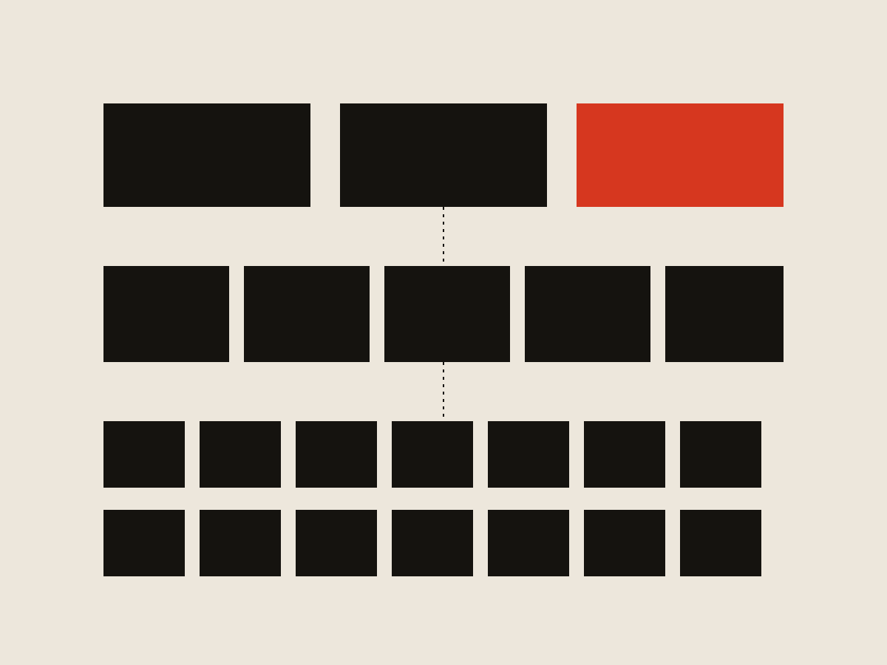
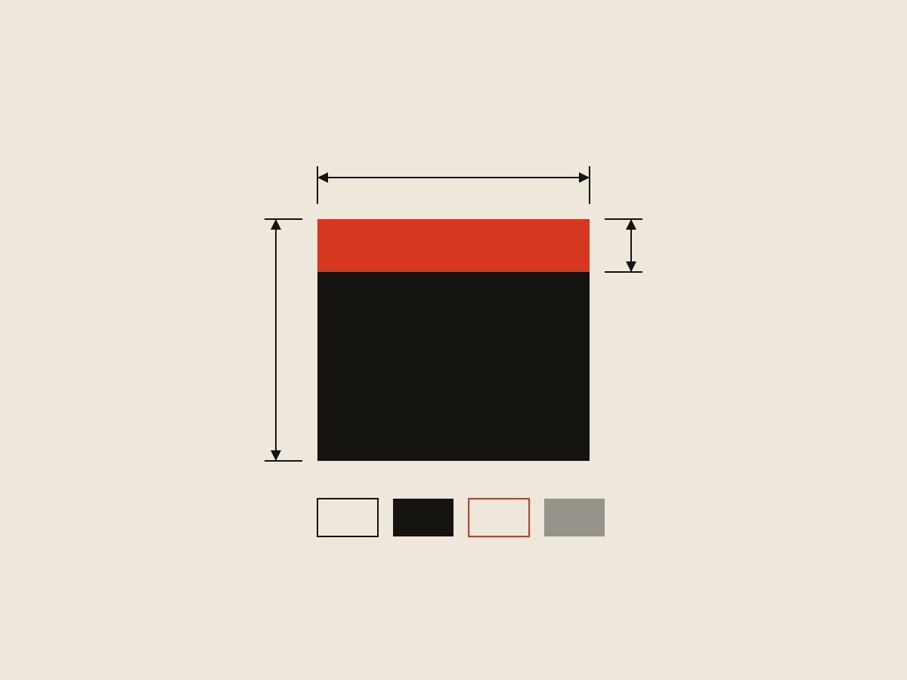

Design Systems / Internal Tools
Building a design system with no team — then earning the team by proving it worked

The short version
Frontline was ~30 products acquired over years, each with its own patterns and no shared language between them. I built the design system from the ground up, drove adoption across the design team, and — after being denied the resources to extend it into engineering — found a side door: an unrelated dev team already building their own component library. I convinced them to build it on my system's specs instead. That got the system into production code, which made its value legible, which got the whole effort funded. The real problem was never component quality. It was organizational adoption.
Context
When I joined Frontline in September 2022, the company was a portfolio of roughly 30 products acquired over many years, each with its own patterns, conventions, and visual language. There was no shared component library and no common product language across teams. A previous attempt at a design system, internally called Lunchbox, had stalled and was never adopted.
Leadership had already decided the new system would be based on Frontline Central, one of the company's most established products. My job was to turn that decision into something designers and developers could actually use.
Building the foundation
I built the system's Figma architecture from the ground up: separate libraries for foundations, components, and patterns, audited out of Frontline Central's existing UI. Between September 2022 and March 2023, I documented usage rules, built the variables and styles, and worked with other designers to construct the component set. By May 2023, the entire design team had adopted it. It's now known internally as Backpack, and the asset library holds 336 components.
I also became the de facto component architect and QA reviewer for the rest of the team. Most designers were still building Figma proficiency, so I reviewed — and often rebuilt — components other people made, to keep the system internally consistent. That role mattered as much as the initial build: a system fragments the moment its own contributors drift from its rules.

Getting turned down for the resources to finish the job
By August 2023, developers outside the design team were requesting Figma access to reference the system directly. Good adoption signal — but it exposed the real gap. Without a coded component library, every dev had to eyeball the Figma file and rebuild each component from scratch. The design system existed; the engineering half of it didn't.
I proposed two ways to close that gap to my manager: stand up a small team (a PM plus dedicated dev resources) to build and govern a React library, or pull a couple of devs part-time and let me run point as both PM and designer.
Both were rejected. The CPO at the time didn't see enough value to justify moving people around.
Rather than let that stall the system, I built "exploded view" specs for each component — every measurement, spacing value, and state broken out and labeled directly in Figma — so a developer with no library access could still reproduce a component accurately instead of guessing. It wasn't a substitute for a real library, but it closed the worst of the gap and kept the system usable while I looked for a way forward.

Finding the opening
In February 2024, a PM mentioned that a group of developers on the People Solutions side — rebuilding Recruiting & Hiring from the ground up — had started planning their own shared component library. I tracked down who owned it (a senior front-end developer) and asked him to walk me through the initiative.
Their plan was to build on Tailwind with minimal customization: essentially unstyled utility components, unconnected to anything the design team was doing. I pitched reskinning their Tailwind components to match Backpack instead. He was hesitant — it meant adding scope to a project that already had a deadline.
So I didn't argue in the abstract. I showed him what the Backpack documentation actually gave his team: a clear, always-current reference for which component to use and when, at a moment when design resources were too thin to be in the room for every decision. Framed that way, adopting the system wasn't extra scope — it was fewer decisions his team had to make alone. He agreed, and engineering built the library directly off my Figma specs.
That's the move I'm proudest of in this project. The system didn't spread because I mandated it. It spread because I made adopting it cheaper than not adopting it, for the specific team I needed.
Outcome
The React library gave developers what the exploded-view specs never could: components they could pull from directly instead of rebuilding by hand. Six products now run on the Backpack system.
And when a new CPO joined and made design-system investment a priority, he set aside dedicated headcount — a new PM, a new dev team, and another designer — to run a full visual overhaul and rollout, building on the foundation I'd already put in place. The resourcing ask that got rejected in 2023 was effectively granted in 2024, once the value was visible instead of hypothetical.
What I'd do differently
If I were starting over, I'd begin with a mature third-party component library rather than building Backpack from scratch. Most of the cost here wasn't design judgment — it was the overhead of building every component from zero, writing usage documentation with no reference point, and asking engineering to commit to a library architecture with no prior art to lean on. Starting from something proven would have freed up the bulk of my time for adoption and governance, which is where the actual bottleneck turned out to be.
What this project taught me
Design systems aren't primarily a design problem — they're an organizational one. A system succeeds when leadership backs adoption, governance exists, implementation resources are available, and teams understand the business value. Component quality is table stakes. The hard part is creating the conditions that let people actually use what you built — and, when those conditions don't exist yet, manufacturing them one team at a time until the value is impossible to ignore.